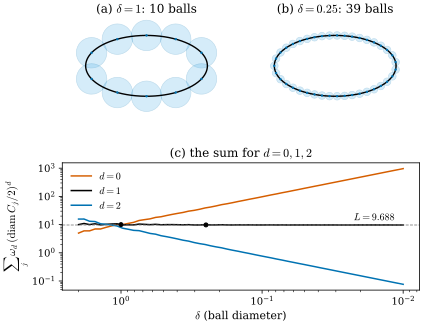
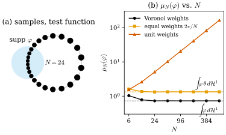

46.2 Measures and Weak Convergence
Goals
- measure를 “어디에 얼마나 있는가”를 집합마다 돌려주는 함수로 이해하고, Lebesgue measure, Dirac mass, 점들의 가중합, curve의 길이 measure를 같은 언어로 쓸 수 있다.
- \(d\)차원 Hausdorff measure \(\mathcal{H}^d\)의 정의를 cover로 설명하고, curve와 surface에서 그것이 길이와 넓이라는 것을 안다. surface를 measure \(\mathcal{H}^d\llcorner M\)으로 쓸 수 있다.
- weak-* convergence를 test function으로 정의하고, circle 위의 point cloud가 어떤 가중치로 어떤 measure에 수렴하는지 계산할 수 있다.
- Riesz representation theorem, compactness, push-forward, density(Radon–Nikodym)가 각각 무엇을 말하는지, 네 논문의 어디에 쓰이는지 말할 수 있다.
Prerequisites
- Section 46.1: test function으로 목록을 묻는 관점 (46.1.1), (46.1.2), staircase(Example 46.1.2)
- surface의 넓이와 parametrization(Definition 7.3.2, Theorem 7.3.5), 함수의 support와 bump function(Definition 12.3.2, Definition 12.3.5)
- calculus: 적분, \(\varepsilon\)–\(\delta\) 극한, uniform continuity. measure theory는 가정하지 않는다.
Motivation
Section 46.1의 표 둘째 줄은 “길이가 어디에 얼마나 있는가”를 비교했다. staircase \(S_n\)의 길이는 대각선 \(D\)를 따라 고르게 퍼지지만 \(D\)의 길이 요소마다 \(\sqrt2\)배씩 있다고 했다. 이 말을 정확히 하려면 두 가지가 필요하다. “길이가 어디에 얼마나”를 담는 대상, 그리고 그런 대상들이 “수렴한다”는 말의 뜻이다. 앞의 것이 measure이고 뒤의 것이 weak-* convergence다.
이 절의 요점은 하나다. measure는 test function \(\varphi\)를 넣으면 숫자 \(\int\varphi\,d\mu\)를 돌려주는 기계이고(Riesz representation theorem), 두 measure가 가깝다는 것은 모든 test function에 비슷한 숫자를 돌려준다는 것이다. point cloud의 \(\sum_im_i\varphi(x_i)\)와 curve의 \(\int_C\varphi\,ds\)가 같은 종류의 대상이 된다.
Measures: How Much Is Where
measure는 집합 \(B\)를 받아 “\(B\) 안에 얼마나 있는가” \(\mu(B) \ge 0\)을 돌려준다. 가장 중요한 요구는 서로 겹치지 않는 조각들의 양을 더하면 합집합의 양이 된다는 것이다. 어떤 집합까지 받을지는 기술적인 문제라서, 여기서는 \(\R^n\)의 거의 모든 “보통” 집합을 포함하는 Borel set으로 정한다. Borel set은 open set에서 출발해 complement, countable union, countable intersection을 되풀이해 얻는 집합이다(open set, closed set, compact set, 그리고 그것들의 countable union은 모두 Borel set이다).
Definition 46.2.1 (measure and Radon measure). \(\Omega \subseteq \R^n\)을 open set이라 하자. \(\Omega\)의 Borel set마다 값 \(\mu(B) \in [0, \infty]\)를 주는 함수 \(\mu\)가 \(\mu(\varnothing) = 0\)이고 서로소인 Borel set \(B_1, B_2, \dots\)에 대해
\[ \mu\Big(\bigcup_jB_j\Big) = \sum_j\mu(B_j) \]
(countable additivity)를 만족하면 \(\mu\)를 \(\Omega\) 위의 (Borel) measure(측도)라 한다. 모든 compact set \(K \subseteq \Omega\)에서 \(\mu(K) \lt \infty\)이면 \(\mu\)를 Radon measure(라돈 측도)라 한다.
이 장과 네 논문에서 measure는 언제나 Radon measure다. 교과서의 정의(outer measure와 regularity로 정의)는 이것과 다르게 보이지만, \(\R^n\)의 open set 위에서 compact set마다 유한한 Borel measure는 자동으로 regular라서 같은 대상이다. measure \(\mu\)에 대한 적분 \(\int\varphi\,d\mu\)는 Riemann 적분처럼 \(\varphi\)의 값과 그 값을 갖는 집합의 measure를 곱해 더한 것의 극한이다. 이 장에서는 \(\varphi\)가 continuous하고 compact support를 갖는 경우만 쓴다. 그런 함수의 공간을 \(C_c(\Omega)\)라 쓰고, 그 원소를 test function이라 부른다(Section 46.1). \(\int\varphi\,d\mu\)를 \(\mu(\varphi)\) 또는 \(\langle\mu, \varphi\rangle\)로도 쓴다.
Example 46.2.2 (first measures).
- Lebesgue measure \(\mathcal{L}^n\): \(\R^n\)의 부피. \(\int\varphi\,d\mathcal{L}^n\)은 보통의 적분이다.
- 점 \(a \in \R^n\)의 Dirac mass(디랙 질량) \(\delta_a\): \(a \in B\)이면 \(\delta_a(B) = 1\), 아니면 \(0\)이다. \(\int\varphi\,d\delta_a = \varphi(a)\)이다. 점 하나에 mass \(1\)이 모여 있다.
- 점과 mass의 목록 \(\{(x_i, m_i)\}\)의 measure \(\mu = \sum_im_i\delta_{x_i}\): \(\mu(B)\)는 \(B\) 안의 점들의 mass의 합이고 \(\int\varphi\,d\mu = \sum_im_i\varphi(x_i)\)이다. point cloud가 주는 “어디에 얼마나”가 이것이다.
- curve \(C\)의 길이 measure: \(\mu(B) = (B \cap C\)의 길이\()\)이다. unit circle이면 \(\int\varphi\,d\mu = \int_0^{2\pi}\varphi(\cos t, \sin t)\,dt\)다.
- restriction과 density: measure \(\mu\)와 Borel set \(A\)에 대해 \((\mu\llcorner A)(B) = \mu(A \cap B)\)이고, \(\theta \ge 0\)이 locally integrable하면 \((\theta\mu)(B) = \int_B\theta\,d\mu\)다. 예를 들어 (d)는 다음 소절의 \(\mathcal{H}^1\llcorner C\)이고, mass가 고르지 않게 퍼진 curve는 \(\theta\,\mathcal{H}^1\llcorner C\)이다.
measure \(\mu\)의 support \(\supp\mu\)는 \(\mu(U) = 0\)인 open set \(U\)를 모두 뺀 closed set이다. \(\supp\delta_a = \{a\}\)이고 \(\supp(\mathcal{H}^1\llcorner C) = C\)이다. 함수의 support(Definition 12.3.2)와 같은 생각이다. “값이 \(0\)이 아닌 곳의 closure”다.
Hausdorff Measure: Length and Area Without Parametrization
curve의 길이와 surface의 넓이는 parametrization으로 정의했다(Definition 7.3.2). 그런데 staircase의 극한이나 triple junction처럼 parametrization이 매끄럽지 않거나 없는 대상에도 “\(d\)차원의 양”을 재고 싶다. Hausdorff measure는 작은 집합으로 덮고, cover의 크기를 \(d\)차원 방식으로 더해서 잰다.
Definition 46.2.3 (Hausdorff measure). \(d \ge 0\)이고 \(\omega_d\)를 \(d\)차원 unit ball의 부피라 하자(\(\omega_0 = 1\), \(\omega_1 = 2\), \(\omega_2 = \pi\), \(\omega_3 = \tfrac43\pi\)). \(A \subseteq \R^n\)과 \(\delta \gt 0\)에 대해
로 정한다. inf는 \(A \subseteq \bigcup_jC_j\)이고 \(\operatorname{diam}C_j \le \delta\)인 countable family \(\{C_j\}\) 전체에 대해 잡는다. \(\mathcal{H}^d_\delta(A)\)는 \(\delta\)가 작아질수록 커지므로(조건이 엄격해지므로) 극한이 \([0, \infty]\)에 있다. \(\mathcal{H}^d\)를 \(d\)-dimensional Hausdorff measure(하우스도르프 측도)라 한다.
지름 \(\delta\)인 집합 하나의 몫 \(\omega_d(\delta/2)^d\)는 지름이 같은 \(d\)차원 ball의 부피다. 곧 \(d = 1\)이면 지름 자체, \(d = 2\)이면 disk의 넓이, \(d = 0\)이면 \(1\)(개수)이다. 작은 cover의 조각마다 그 조각을 \(d\)차원 ball로 보고 더하는 것이다.
Theorem 46.2.4 (Hausdorff measure is length and area). (a) \(\mathcal{H}^d\)는 \(\R^n\)의 Borel measure다. \(\mathcal{H}^0\)은 점의 개수, \(\mathcal{H}^n\)은 \(\mathcal{L}^n\)이다. (b) \(\gamma\colon[a, b] \to \R^n\)이 injective \(C^1\) curve이면 \(\mathcal{H}^1(\gamma([a, b])) = \int_a^b\abs{\gamma'(t)}\,dt\)이다. \(\mathbf{x}\colon U \to \R^3\)(\(U \subseteq \R^2\) open)이 injective \(C^1\) immersion이면 Borel set \(E \subseteq U\)마다 \(\mathcal{H}^2(\mathbf{x}(E)) = \int_E\abs{\mathbf{x}_u \times \mathbf{x}_v}\,du\,dv\)이다(area formula). (c) \(\mathcal{H}^d(A) \lt \infty\)이면 \(s \gt d\)인 모든 \(s\)에서 \(\mathcal{H}^s(A) = 0\)이고, \(\mathcal{H}^d(A) \gt 0\)이면 \(s \lt d\)에서 \(\mathcal{H}^s(A) = \infty\)이다.
증명은 [EvansGariepy92]의 Chapter 2(Hausdorff measure)와 Chapter 3(area formula)에 있다. (b)가 말하는 것은 parametrization으로 정의한 길이와 넓이가 parametrization 없이 cover로 잰 값과 같다는 것이다. 그래서 surface \(M\)의 넓이 measure는 \(\mathcal{H}^2\llcorner M\)이고, Tour부터 써 온 \(\int_M\varphi\,dA\)는 \(\int\varphi\,d(\mathcal{H}^2\llcorner M)\)과 같다. (c)는 차원 \(d\)가 cover에 의해 저절로 골라진다는 것이다. 다음 예가 이것을 수치로 보인다.
Example 46.2.5 (covering the ellipse). ellipse \((2\cos t, \sin t)\)의 길이는 \(L = 9.6884\)다. 길이를 \(k = \lceil L/\delta\rceil\)등분한 점마다 지름 \(\delta\)인 ball을 두면 ellipse가 덮인다(ball은 중심에서 arc length \(\delta/2\) 이내의 점을 모두 담는다). 이 cover의 합 \(k\,\omega_d(\delta/2)^d\)은
- \(d = 1\): 지름의 합 \(k\delta\). \(\delta = 1\)이면 ball \(10\)개로 \(10\), \(\delta = 0.25\)이면 \(39\)개로 \(9.75\)다. \(\delta \to 0\)에서 \(L\)에 다가간다.
- \(d = 0\): 개수 \(k\). \(\delta = 0.01\)이면 \(969\)이고 \(\delta \to 0\)에서 발산한다. curve에는 점이 무한히 많다.
- \(d = 2\): \(k\pi(\delta/2)^2 \approx \tfrac\pi4L\delta\). \(\delta = 0.01\)이면 \(0.0761\)이고 \(0\)으로 간다. curve의 넓이는 \(0\)이다.
하나의 cover가 주는 합은 \(\mathcal{H}^d_\delta\)의 위쪽 bound일 뿐이지만, 세 차원의 운명은 분명하다. curve에 맞는 차원은 \(d = 1\)뿐이다.
Verification: verify/v-46-2-measures.py
Figure 46.2.1(a), (b)가 두 cover다. (a)의 ball 10개는 ellipse보다 훨씬 두껍게 덮지만, Hausdorff measure는 ball의 “지름”만 더하므로 두께는 상관없다. (b)의 39개는 ellipse에 바짝 붙는다. (c)는 \(\delta\)를 \(2\)에서 \(0.01\)까지 줄이며(오른쪽으로 갈수록 작다) 세 합을 그린 것이다. 주홍(\(d = 0\))은 올라가고, 파랑(\(d = 2\))은 내려가고, 검정(\(d = 1\))만 점선 \(L\)에 붙어 있다. 검은 점 두 개가 (a)와 (b)의 값 \(10\)과 \(9.75\)다.

\(\mathcal{H}^d\) 자체는 \(d \lt n\)이면 Radon measure가 아니다. 평면의 unit disk는 compact하지만 \(\mathcal{H}^1\)이 \(\infty\)다. 그러나 길이(넓이)가 유한한 \(d\)차원 대상 \(M\)으로 제한한 \(\mathcal{H}^d\llcorner M\)은 Radon measure다. 이것이 “surface를 measure로 본다”의 정확한 뜻이고, 논문들은 이것을 \(\mathcal{H}^d_{|M}\)으로 쓴다(Conventions 상자).
Weak-* Convergence
이제 measure의 수렴이다. Example 46.1.1에서 세 목록이 원을 나타낸다는 것을 “같은 test function에 비슷한 값을 준다”로 읽었다. 이것을 모든 test function으로 넓힌 것이 정의다.
Definition 46.2.6 (weak-* convergence). \(\Omega\) 위의 Radon measure \(\mu_k\)와 \(\mu\)에 대해
가 모든 \(\varphi \in C_c(\Omega)\)에서 성립하면 \(\mu_k\)가 \(\mu\)로 weak-* convergence(약-* 수렴)한다고 하고 \(\mu_k \overset{*}{\rightharpoonup} \mu\)로 쓴다.
이름의 “*”는 measure를 \(C_c(\Omega)\) 위의 linear functional, 곧 dual space의 원소로 보는 데서 왔다. 중요한 것은 test function이 continuous하다는 점이다. continuous한 \(\varphi\)는 가까운 점에 비슷한 값을 주므로, mass가 조금 움직이는 것은 작은 변화로 본다. 반대로 집합 하나의 measure \(\mu_k(B)\)는 수렴하지 않을 수 있다.
Example 46.2.7 (moving masses and point clouds on the circle). (a) \(\delta_{1/k} \overset{*}{\rightharpoonup} \delta_0\)(\(\R\) 위)이다. \(\int\varphi\,d\delta_{1/k} = \varphi(1/k) \to \varphi(0)\)이기 때문이다. 그러나 \(\delta_{1/k}(\{0\}) = 0\)이고 \(\delta_0(\{0\}) = 1\)이다. 점 하나의 measure는 수렴하지 않는다.
(b) unit circle \(C\) 위에 \(N\)개의 점 \(t_j = 2\pi u_j + 0.5\sin(2\pi u_j)\)(\(u_j = (j + \tfrac12)/N\))를 둔다. \(t = \pi\) 근처에 몰리고 \(t = 0\) 근처에서 성기다. 세 가지 가중치로 measure \(\mu_N = \sum_jm_j\delta_{x_j}\)를 만든다.
- Voronoi weights(이웃 점과의 중점 사이 호의 길이): \(\mu_N \overset{*}{\rightharpoonup} \mathcal{H}^1\llcorner C\). 각 점이 자기 몫의 길이를 가지므로 \(\sum_jm_j\varphi(x_j)\)는 \(\int_C\varphi\,ds\)의 Riemann 합이다.
- equal weights \(2\pi/N\): 전체 mass는 \(2\pi\)로 맞지만 \(\mu_N \overset{*}{\rightharpoonup} \theta\,\mathcal{H}^1\llcorner C\), \(\theta = 1/(1 + 0.5\cos2\pi u)\)이다. 점이 몰린 \(t = \pi\)에서 \(\theta = 2\), 성긴 \(t = 0\)에서 \(\theta = \tfrac23\)이다(Exercise 46.2.3).
- unit weights \(1\): 고정된 호 안의 점의 수가 \(N\)에 비례해 늘어나므로 \(\int\varphi\,d\mu_N \to \infty\)(\(\varphi \ge 0\)이고 \(0\)이 아니면). 수렴하지 않는다.
점의 위치가 같아도 가중치가 극한의 measure를 정한다.
Verification: verify/v-46-2-measures.py
Figure 46.2.2는 (b)를 test function 하나로 확인한 것이다. (a)의 하늘색 disk가 bump function \(\varphi\)(중심 \((-1, 0)\), 반지름 \(0.6\), 중심에서 \(1\))의 support이고, 마침 점이 몰린 곳이다. (b)에서 Voronoi weights(검정)는 \(N = 24\)에서 이미 극한 \(\int\varphi\,d\mathcal{H}^1 = 0.7294\)에 붙는다(\(0.7293\)). equal weights(주황)는 다른 극한 \(\int\varphi\,\theta\,d\mathcal{H}^1 = 1.3374\)로 간다. 점이 몰린 곳이라 길이의 거의 두 배를 센다. unit weights(주홍)는 \(N\)에 비례해 끝없이 올라간다.

Example 46.2.8 (the staircase as a measure). Example 46.1.2의 staircase \(S_n\)에 대해 \(\mathcal{H}^1\llcorner S_n \overset{*}{\rightharpoonup} \sqrt2\,\mathcal{H}^1\llcorner D\)이다. \(\varphi \in C_c(\R^2)\)를 잡자. \(k\)번째 가로 조각(\(y = k/n\), \(x \in [k/n, (k + 1)/n]\)) 위에서 \(\varphi\)는 대각선의 값 \(\varphi(t, t)\)와 최대 \(\omega(1/n)\)만큼 다르다(\(\omega\)는 \(\varphi\)의 uniform continuity의 modulus). 세로 조각도 같다. 그래서
\[ \begin{aligned} \int_{S_n}\varphi\,ds &= 2\int_0^1\varphi(t, t)\,dt + O(\omega(\tfrac1n)) \\ &\to 2\int_0^1\varphi(t, t)\,dt = \sqrt2\int_D\varphi\,d\mathcal{H}^1 \end{aligned} \]
이다. 마지막 등식은 \(D\) 위에서 \(ds = \sqrt2\,dt\)이기 때문이다. 예를 들어 \(\varphi = xy\)(\([0, 1]^2\) 밖에서는 잘라 compact support로 만든다)이면 \(\int_{S_n}xy\,ds = \tfrac23 - \tfrac{1}{6n^2}\)(\(n = 4\)에서 \(0.65625\))이고 \(\tfrac23\)으로 간다. \(\int_Dxy\,d\mathcal{H}^1 = \sqrt2/3 = 0.4714\)의 \(\sqrt2\)배다. 길이는 \(D\)를 따라 고르게 퍼지지만 밀도가 \(\sqrt2\)다.
Verification: verify/v-46-2-measures.py
weak-* 수렴이 쓸모 있는 이유는 다음 정리에 있다. mass가 bounded인 열은 언제나 수렴하는 부분열을 갖는다. surface를 근사하는 데이터의 열에서 극한 대상을 “만들어 내는” 도구가 이것이다.
Theorem 46.2.9 (compactness and semicontinuity). \(\Omega\) 위의 Radon measure의 열 \(\mu_k\)에 대해 다음이 성립한다. (a) 모든 compact set \(K \subseteq \Omega\)에서 \(\sup_k\mu_k(K) \lt \infty\)이면, 부분열 \(\mu_{k_j}\)와 Radon measure \(\mu\)가 있어 \(\mu_{k_j} \overset{*}{\rightharpoonup} \mu\)이다. (b) \(\mu_k \overset{*}{\rightharpoonup} \mu\)이면 open set \(U\)에서 \(\mu(U) \le \liminf_k\mu_k(U)\), compact set \(K\)에서 \(\mu(K) \ge \limsup_k\mu_k(K)\)이다. 또 closure가 \(\Omega\) 안에서 compact한 Borel set \(B\)가 \(\mu(\partial B) = 0\)이면 \(\mu_k(B) \to \mu(B)\)이다.
증명은 [EvansGariepy92]의 Chapter 1에 있다. (b)는 Example 46.2.7(a)의 현상을 정리한 것이다. mass는 극한에서 집합의 boundary로 새어 나갈 수 있지만(\(U = (0, 1)\)에서 \(\delta_{1/k}(U) = 1\)이고 \(\delta_0(U) = 0\)), 없던 mass가 open set 안에 갑자기 생기지는 않는다. boundary에 mass가 없는 집합에서는 집합의 measure도 수렴한다. Section 46.4에서 varifold의 열에 같은 정리를 쓰고, 그것이 Allard의 compactness theorem의 뼈대가 된다(Section 46.5).
Measures as Machines on Test Functions
지금까지 measure를 집합 함수로 정의하고 test function을 적분했다. 거꾸로 test function에 숫자를 주는 기계에서 measure를 되찾을 수 있다. 이것이 Section 46.1의 관점(“surface는 test function에 숫자를 돌려주는 기계”)을 정당화한다.
Theorem 46.2.10 (Riesz representation). (a) \(\Lambda\colon C_c(\Omega) \to \R\)가 linear이고 positive(\(\varphi \ge 0\)이면 \(\Lambda(\varphi) \ge 0\))이면, Radon measure \(\mu\)가 하나뿐으로 있어 모든 \(\varphi \in C_c(\Omega)\)에서 \(\Lambda(\varphi) = \int\varphi\,d\mu\)이다. (b) \(\Lambda\colon C_c(\Omega; \R^m) \to \R\)가 linear이고, compact set \(K \subseteq \Omega\)마다 상수 \(c_K\)가 있어 \(\supp X \subseteq K\)인 모든 \(X\)에서 \(\abs{\Lambda(X)} \le c_K\sup\abs{X}\)이면, Radon measure \(\mu\)와 \(\abs{\nu} = 1\)(\(\mu\)-a.e.)인 \(\mu\)-measurable \(\nu\colon\Omega \to \R^m\)이 있어 \(\Lambda(X) = \int\inner{X}{\nu}\,d\mu\)이다. \(\nu\mu\)를 vector-valued Radon measure라 하고, \(\mu\)를 그 total variation \(\abs{\nu\mu}\)라 한다.
(a)는 “positive linear functional = measure”, (b)는 “\(\sup\abs{X}\)로 bound되는 linear functional = vector measure”다. (b)의 조건이 중요하다. \(\Lambda(X)\)가 \(X\)의 값만으로 bound되어야 하고, \(X\)의 도함수가 필요하면 measure가 아니다. 예를 들어 \(\R\)에서 \(\Lambda(X) = X'(0)\)은 linear이지만 \(\sup\abs{X}\)를 작게 하고 \(X'(0)\)을 크게 할 수 있으므로 measure가 아니다. point cloud의 first variation이 정확히 이런 꼴이라 measure가 아니라는 것이 [BLM17, Remark 2.14]이고, Section 46.5에서 계산한다. 반대로 bound가 있을 때 (b)를 써서 first variation을 measure로 바꾸는 것이 [BLM17, Remark 2.10]의 “Riesz theorem” 단계다.
measure를 map으로 옮기는 연산도 test function으로 정의하면 간단하다.
Definition 46.2.11 (push-forward). \(f\colon X \to Y\)가 continuous map이고 \(\mu\)가 \(X\) 위의 measure이면, \(Y\)의 Borel set \(B\)마다 \((f_\#\mu)(B) = \mu(f^{-1}(B))\)로 정한 measure \(f_\#\mu\)를 \(\mu\)의 push-forward(밀어낸 측도)라 한다. test function으로는
이다. \(f\)가 proper(compact set의 preimage가 compact)이고 \(\mu\)가 Radon이면 \(f_\#\mu\)도 Radon이다.
push-forward는 “각 mass 조각을 \(f\)로 옮긴다”는 것이다. Dirac mass는 \(f_\#\delta_a = \delta_{f(a)}\)로 옮겨진다. 이 장에서 push-forward는 두 번 쓰인다. varifold에서 tangent plane을 잊고 위치만 남기는 mass \(\norm{V} = \pi_\#V\)(Section 46.4), 그리고 surface를 vector field의 flow로 움직인 varifold \(V_t\)(Section 46.5)다. 뒤의 것은 mass를 옮기기만 하는 것이 아니라 넓이의 배율도 곱해야 하므로, 이 정의에 Jacobian을 곱한 판을 쓴다.
Example 46.2.12 (projecting the circle). \(\pi(x, y) = x\)로 unit circle의 길이 measure \(\mu = \mathcal{H}^1\llcorner C\)를 \(x\)축에 밀어내자. 구간 \([a, b] \subseteq (-1, 1)\)의 preimage는 위아래 두 호이고, \(x = \cos t\)에서 \(ds = dt = dx/\sqrt{1 - x^2}\)이다. 그래서 \(\pi_\#\mu\)는 \((-1, 1)\) 위에서 density \(2/\sqrt{1 - x^2}\)를 갖는다. 전체 mass는 \(\int_{-1}^1\tfrac{2\,dx}{\sqrt{1 - x^2}} = 2\pi\)로 보존된다. density는 \(x = \pm1\)에서 발산한다. 그곳에서 circle이 수직이라 짧은 \(x\) 구간에 긴 호가 겹치기 때문이다(\([0.9, 1]\)에는 길이 \(2\arccos0.9 = 0.902\)가 몰린다).
Verification: verify/v-46-2-measures.py
Densities: Comparing Two Measures
마지막 도구는 두 measure의 비다. Example 46.2.7의 equal-weight 극한 \(\theta\,\mathcal{H}^1\llcorner C\)에서 \(\theta\)를 되찾으려면, 작은 ball 안의 두 measure의 양을 나누면 된다. 이것이 일반적으로 성립한다는 것이 다음 정리다. Section 46.5에서 generalized mean curvature를 “first variation의 mass에 대한 density”로 정의할 때와, Section 46.7에서 두 measure를 kernel로 부드럽게 한 뒤 나눌 때 이 정리가 바탕이다.
Theorem 46.2.13 (Radon–Nikodym and differentiation of measures). \(\mu\)를 \(\R^n\)의 open set 위의 Radon measure, \(\lambda\)를 Radon measure 또는 vector-valued Radon measure라 하자. 그러면 \(f \in L^1_{\mathrm{loc}}(\mu)\)와 \(\mu\)-null set에 모인 measure \(\lambda_s\)(\(\mu\)에 대해 singular)가 있어
이다. 뒤의 식은 \(\mu\)-a.e. \(x\)에서 성립한다. \(f\)를 \(\lambda\)의 \(\mu\)에 대한 density라 하고 \(\tfrac{d\lambda}{d\mu}\)로도 쓴다.
증명은 [EvansGariepy92]의 Chapter 1(Besicovitch covering theorem을 쓴 differentiation)에 있다. 정리가 말하는 것은 두 가지다. 어떤 measure \(\lambda\)든 \(\mu\)로 “밀도가 있는 부분”과 \(\mu\)가 보지 못하는 곳에 모인 부분으로 나뉜다. 밀도는 작은 ball에서의 비의 극한으로 계산된다. Example 46.2.7의 \(\theta\)에서 \(t = \pi\)(곧 \(x = (-1, 0)\))의 비는 \(r = 0.2, 0.05, 0.01\)에서 \(1.9507\), \(1.9967\), \(1.9999\)로 \(\theta = 2\)에 다가간다. singular 부분의 예는 \(\R\)에서 \(\lambda = \mathcal{L}^1 + \delta_0\), \(\mu = \mathcal{L}^1\)이다. \(f = 1\), \(\lambda_s = \delta_0\)이고, \(x = 0\)에서 비는 발산하지만 \(\{0\}\)은 \(\mu\)-null이라 상관없다. Section 46.5에서 boundary나 junction이 만드는 first variation이 바로 이런 singular 부분이다.
Summary
- Radon measure는 Borel set마다 양을 주고 countably additive이며 compact set에서 유한한 함수다. Lebesgue measure, Dirac mass \(\delta_a\), 점의 가중합 \(\sum m_i\delta_{x_i}\), curve의 길이 measure가 모두 measure다(Definition 46.2.1, Example 46.2.2).
- \(d\)차원 Hausdorff measure는 지름 \(\delta\) 이하의 cover에서 \(\omega_d(\operatorname{diam}/2)^d\)를 더한 것의 극한이다. curve에서는 길이, surface에서는 넓이이고, 차원은 cover가 저절로 고른다((46.2.1), Theorem 46.2.4). surface는 measure \(\mathcal{H}^d\llcorner M\)이다.
- weak-* convergence는 모든 continuous test function의 적분이 수렴하는 것이다((46.2.2)). circle 위의 point cloud는 Voronoi weights로 \(\mathcal{H}^1\llcorner C\)에, equal weights로 \(\theta\,\mathcal{H}^1\llcorner C\)에 수렴하고, staircase의 길이 measure는 \(\sqrt2\,\mathcal{H}^1\llcorner D\)에 수렴한다.
- mass가 bounded인 열은 수렴하는 부분열을 갖는다(Theorem 46.2.9). positive linear functional은 measure이고, \(\sup\abs{X}\)로 bound되는 linear functional은 vector measure다(Theorem 46.2.10). push-forward는 mass를 map으로 옮기고((46.2.3)), density는 작은 ball에서의 비의 극한이다((46.2.4)).
다음 절에서는 measure에 방향을 붙일 준비를 한다. 방향 없는 직선과 평면을 orthogonal projection matrix로 나타내고, 그 집합인 Grassmannian \(G_{d,n}\) 위에 거리를 둔다. 두 평면 사이의 거리가 그 normal 사이의 각과 어떻게 연결되는지, 그리고 tangent plane이 vector field의 “늘어나는 정도”를 어떻게 정하는지 본다.
Quick check
Exercise 46.2.1 ★ \(\R\) 위의 다음 열은 weak-* 수렴하는가? 수렴하면 극한은 무엇인가? (a) \(\tfrac12\delta_{1/k} + \tfrac12\delta_{-1/k}\), (b) \(k\,\mathcal{L}^1\llcorner[0, 1/k]\), (c) \(\delta_k\), (d) \(k\,\delta_{1/k}\).
Solution
(a) \(\tfrac12\varphi(1/k) + \tfrac12\varphi(-1/k) \to \varphi(0)\)이므로 \(\delta_0\)이다. (b) \(k\int_0^{1/k}\varphi\,dx\)는 \([0, 1/k]\)에서의 평균이므로 \(\varphi(0)\)으로 가고 극한은 \(\delta_0\)이다(\(\varphi = \cos\)이면 \(k\sin(1/k) \to 1\)). 퍼진 mass가 한 점에 모일 수 있다. (c) \(\varphi\)의 support는 compact하므로 \(k\)가 크면 \(\varphi(k) = 0\)이다. 극한은 \(0\)이다. mass \(1\)이 무한히 멀리 빠져나갔고, Theorem 46.2.9(b)의 부등식이 등호가 아닐 수 있는 예다. (d) \(\varphi(0) \ne 0\)이면 \(k\varphi(1/k) \to \pm\infty\)이므로 수렴하지 않는다. \([-1, 1]\)에서의 mass \(k\)가 bounded가 아니라 Theorem 46.2.9(a)의 가정이 깨진다.
Verification: verify/v-46-2-measures.py
Exercise 46.2.2 ★ \(\R^2\)에서 다음 값을 구하여라. (a) 점 \(5\)개의 \(\mathcal{H}^0\). (b) 길이 \(\ell\)인 선분의 \(\mathcal{H}^1\)과 \(\mathcal{H}^2\). (c) unit square \([0, 1]^2\)의 \(\mathcal{H}^1\), \(\mathcal{H}^2\), \(\mathcal{H}^3\). (d) unit square의 boundary의 \(\mathcal{H}^1\).
Solution
(a) \(\mathcal{H}^0\)은 개수이므로 \(5\). (b) \(\ell\)과 \(0\)(Theorem 46.2.4(b), (c)). (c) \(\mathcal{H}^2 = \mathcal{L}^2\)이므로 \(1\)이고, (c)의 정리에서 \(\mathcal{H}^1 = \infty\), \(\mathcal{H}^3 = 0\)이다. 직접 보면, 한 변이 \(1/k\)인 정사각형 \(k^2\)개(지름 \(\sqrt2/k\))로 덮을 때 \(d = 3\)의 합은 \(k^2\cdot\tfrac43\pi(\tfrac{\sqrt2}{2k})^3 \to 0\)이다. 같은 cover의 \(d = 2\)의 합은 \(k\)와 무관하게 \(\pi/2\)인데, 이것은 위쪽 bound일 뿐이고 정확한 값 \(1\)은 더 좋은 cover(ball에 가까운 조각)가 준다. (d) 네 변의 길이의 합 \(4\)다.
Verification: verify/v-46-2-measures.py
Exercise 46.2.3 ★★ Example 46.2.7(b)에서 equal weights \(2\pi/N\)의 극한이 \(\theta\,\mathcal{H}^1\llcorner C\), \(\theta = 1/(1 + 0.5\cos2\pi u)\)임을 보이고, \(\int\theta\,d\mathcal{H}^1 = 2\pi\)임을 확인하여라. 전체 mass만 보는 test function \(\varphi = 1\)로는 두 극한을 구별할 수 있는가?
Solution
\(\sum_j\tfrac{2\pi}{N}\varphi(x(t(u_j)))\)는 \(u\)에 대한 midpoint 합이므로 \(2\pi\int_0^1\varphi(x(t(u)))\,du\)로 간다. 변수를 \(t\)로 바꾸면 \(dt = 2\pi(1 + 0.5\cos2\pi u)\,du\)이므로 이 값은 \(\int_0^{2\pi}\varphi(x(t))\,\theta\,dt\), \(\theta = 1/(1 + 0.5\cos2\pi u)\)이다. 곧 \(\theta\,\mathcal{H}^1\llcorner C\)에 대한 적분이다. \(\int\theta\,dt = \int_0^12\pi\,du = 2\pi\)이다. 전체 mass는 둘 다 \(2\pi\)라서 \(\varphi = 1\)로는 구별할 수 없다. mass가 “어디에” 있는지는 국소적인 test function(Figure 46.2.2의 bump)이 알려 준다. weak-* 수렴이 모든 test function을 요구하는 이유다.
Verification: verify/v-46-2-measures.py
Exercise 46.2.4 ★ staircase \(S_n\)의 길이 measure \(\mathcal{H}^1\llcorner S_n\)을 \(\pi(x, y) = x\)로 \(x\)축에 밀어낸 measure를 구하고, \(n \to \infty\)의 weak-* 극한을 구하여라.
Solution
가로 조각들은 \([0, 1]\)을 정확히 한 번 덮으므로 \(\mathcal{L}^1\llcorner[0, 1]\)을 준다. 세로 조각 \(k\)(\(x = (k + 1)/n\), 길이 \(1/n\))는 한 점으로 눌리므로 \(\tfrac1n\delta_{(k+1)/n}\)을 준다. 그래서 \(\pi_\#(\mathcal{H}^1\llcorner S_n) = \mathcal{L}^1\llcorner[0, 1] + \sum_{k=1}^n\tfrac1n\delta_{k/n}\)이다. 뒤의 합은 \([0, 1]\)의 Riemann 합이므로 \(\mathcal{L}^1\llcorner[0, 1]\)로 간다. 극한은 \(2\,\mathcal{L}^1\llcorner[0, 1]\)이다. 예를 들어 \(\varphi = x\)이면 \(\tfrac12 + \tfrac{n + 1}{2n} \to 1\)이다. push-forward가 Dirac mass를 만들 수 있지만(curve를 한 점으로 누르면), 극한에서는 다시 퍼질 수 있다.
Verification: verify/v-46-2-measures.py
Exercise 46.2.5 ★ unit circle의 길이 measure \(\lambda = \mathcal{H}^1\llcorner C\)를 \(\mu = \mathcal{L}^2\)와 비교하여라. (46.2.4)의 분해에서 \(f\)와 \(\lambda_s\)는 무엇인가? surface의 measure를 부피 measure의 density로 쓸 수 없는 이유를 말하여라.
Solution
\(C\)는 \(\mathcal{L}^2\)-null set이고 \(\lambda\)는 \(C\)에 모여 있으므로 \(\lambda\) 전체가 singular다. \(f = 0\), \(\lambda_s = \lambda\)이다. 비로 보면 \(C\) 위의 점에서 \(\lambda(B_r)/\mathcal{L}^2(B_r) \approx 2r/(\pi r^2) = 2/(\pi r) \to \infty\)이고(\(r = 0.01\)이면 약 \(63.7\)), \(C\) 밖의 점에서는 작은 \(r\)에서 \(0\)이다. \(d \lt n\)인 대상의 measure는 언제나 \(\mathcal{L}^n\)에 대해 singular다. 그래서 surface끼리는 \(\mathcal{H}^d\)를 기준으로 비교하고(Example 46.2.7의 \(\theta\)), 부피의 measure와 비교할 때는 kernel로 두께를 주어야 한다(Section 46.7).
Verification: verify/v-46-2-measures.py